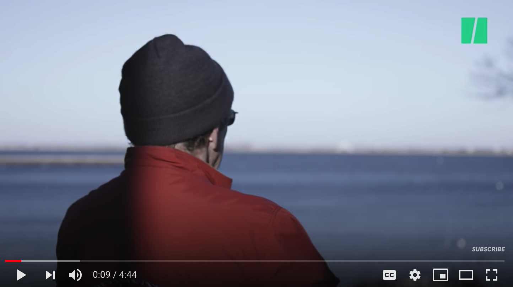
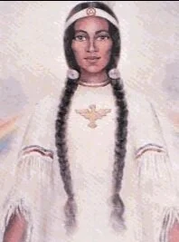
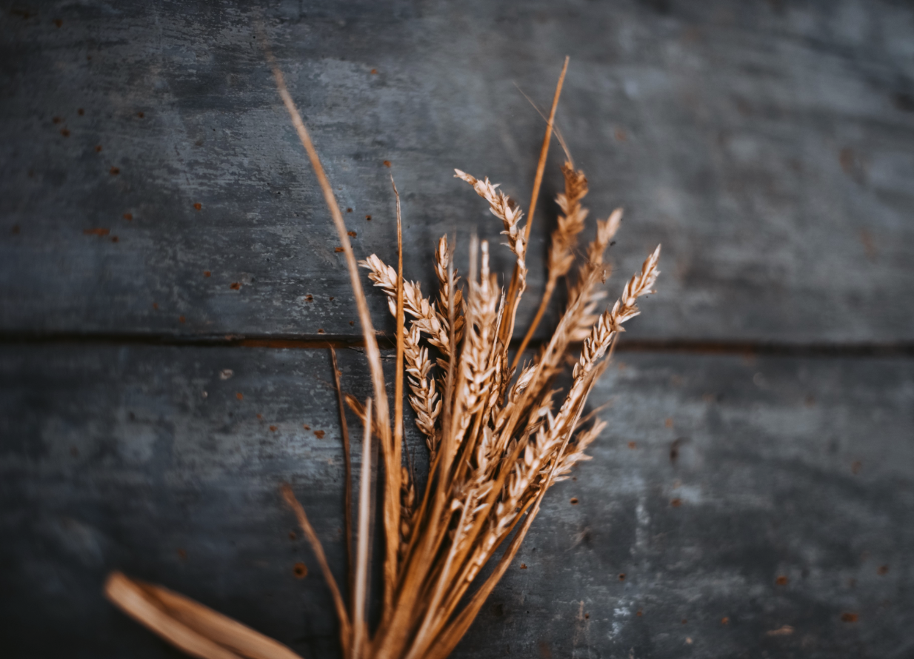
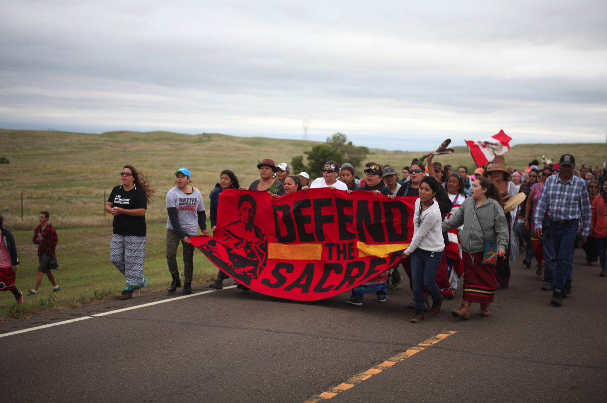
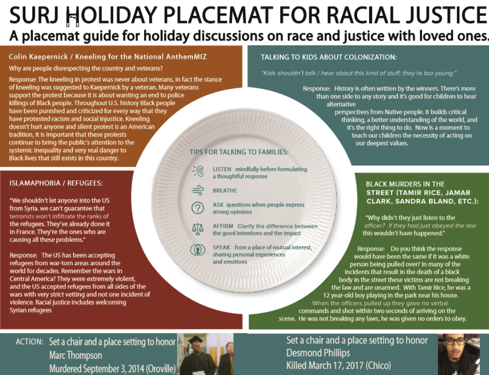

2019-11-16
Thanksgiving A Day Of Thanks And A Day Of Mourning
For many of us, the Thanksgiving Holiday is deeply connected to family, friends, food and giving thanks. I truly believe that these are all beautiful and important things to celebrate and I would never want to take that away from anyone. However, I can no longer celebrate the actual Holiday of Thanksgiving without the acknowledgement of its REAL history, which is a dark and violent one. This month’s blog is focused on some of the many resources that have educated me on the history of Thanksgiving and it’s not the history that I was not taught in school. If I have one ask of my white community for this holiday, it’s that you pass this on to other white people in your lives.

Why These Native Americans Observe a National Day of Mourning on Thanksgiving Day
This 4:44 minute video stirred up some super uncomfortable feelings in me. Come to find out that while I’ve been celebrating Thanksgiving every year with family and warm food, The Native Americans of New England have been organizing a National Day of Mourning in Plymouth Rock. I’m going to be honest, I felt so stupid and embarrassed at first for being so unaware and naïve. Once again, I’ve been duped by White Supremacy. The next feelings that swarmed up were the all too familiar ones of guilt and shame. I’m not going to lie, I still battle those on a daily basis but I continue to work through them so that I can transform them into worthwhile actions. Some of those actions are, sharing this story with others and advocating that this and other stories continued to be told.
Link to Video: https://www.youtube.com/watch?v=OW0s8ToCyU8

The Real Story of Thanksgiving by Susan Bates
This short piece written by Susan Bates is one of many you will find on The Manataka American Indian Council webpage of resources for teachers. This piece and all the others on the page pushed up against a lot of my internalized racial superiority, especially the entitlement of safety and comfort. Nothing about these pieces are comfortable and they are not a “safe” place to be if escaping discomfort is the goal. They were really difficult to read. There is nothing warm and fuzzy about the actual violent massacre that the colonizers of this county gave “thanks” for. Yet, I feel more human in feeling this pain and discomfort than I ever would by distancing and disassociating myself from the truth. Being fully human means feeling and connecting. White supremacy is about separating and disconnecting. I’m choosing full humanity.
Link to Article: https://www.manataka.org/page269.html

Decolonizing Thanksgiving: A Toolkit for Combating Racism in Schools
As far as I’m concerned this is a tool kit for all of us, not just children. The more I learn about the history of colonization, and racism, the angrier I get about the lies I’ve been told and all the harm that my lack of knowledge has caused. I know that it wasn’t me who was directly responsible for these atrocities but I now understand that I have gained and continue to gain advantages and unearned privileges from them. I may not be able to change the past, but I don’t have to continue to perpetuate the harm that is still being caused. Here again, I can feel the influence of deeply rooted messages of internalized racial superiority. I know that the anger I feel is valid; yet, I also know that staying stuck there is a manifestation of white fragility, entitlement and rage. In the past, I have expected others (teachers, parents, mentors and yes, even People of Color to educate me. I now understand that it’s up to me to go out there myself and seek out the truth. I know it’s there, I’ve started to find it, but it means taking the initiative and not expecting it to come to me. It takes work and effort!
https://medium.com/age-of-awareness/decolonizing-thanksgiving-a-toolkit-for-combatting-racism-in-schools-5d4e3023a2f8

Ok, so let’s talk about Land Acknowledgements. The following resources cover when to make them, when not to and give some guidelines, support and examples for doing a Land Acknowledgement.
I have declared that this year at the Thanksgiving table I will ask to make a land acknowledgement before we start the meal. In making this declaration, I had to connect with my fears around doing this and challenge myself to think about why I wanted to do it in the first place. In the process of looking inward, I came face-to-face with some things I wasn’t very proud of. First, I realized that much of my fear was about making family members uncomfortable (ruining the day for my 91 year old aunt by talking about something that wasn’t warm and fuzzy on this family day, pissing everyone else off, for upsetting my aunt, the eye rolls accompanied by comments like, “here you go again, can’t you just turn it off for a day?”). The pull to just leave it alone and be silent is real folks. Yet, as one of the members of my European Dissent group said the other day, sitting with not saying it actually feels worse. I have to make a choice between safe and comfortable or being a perpetrator of violence by being silent. The choice becomes apparent (if not easy) when I think about all the people in the world who don’t get to turn away from the violence of oppression and who don’t even have the privilege of this choice. I hope these are as helpful to you as they have been to me.
Lastly, I want to thank Showing Up for Racial Justice (SURJ) for putting this out a few years ago. It continues to be relevant and useful. I’m going to keep it with me this year for support.

In gratitude for the opportunity to be in community with you.
See you on the journey,
Robin